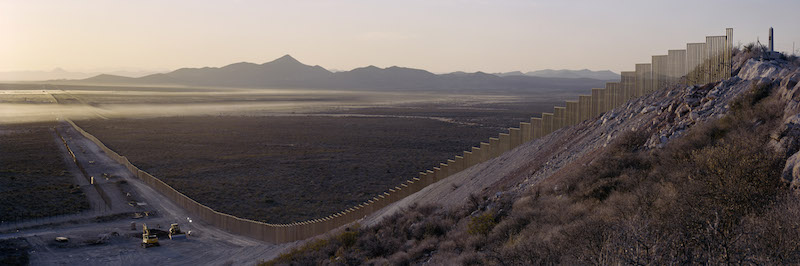

2016-12-23 08:00

A few days ago I received an email asking me to petition President Obama to use his remaining days in office to shut down our existing Muslim registry. It’s called NSEERS. Although this was a Bush-era program, Democrats missed eight years of opportunity to shut it down before it occurred to them that it was a bad idea.
Last week we learned that David Friedman, a supporter of Israel’s extreme right-wing settler movement, is Trump’s pick for ambassador to Israel. Friedman rather undiplomatically called liberal American Jews “worse than Kapos” for supporting a Two State solution. But with this appointment Trump is simply saying out loud what Democrats have done through neglect for years – effectively subverting a Two State solution and habitually placing Israeli interests before our own.
The week before that, Trump placed a call to Taiwanese president Tsai Ying-wen, riling both Beijing and American liberals for an apparent violation of the long-standing “One China policy.” But hold on a second! – Taiwan has been buying American military equipment for years. Just last year they were in negotiations with the Obama administration to completely overhaul their arsenal. Obviously plenty of Democrats have been talking to Taiwan.
Donations to the ACLU have increased by 965% since Donald Trump’s election. Liberals worry that civil liberties will take a hit — and the last eight years have eroded many. But when they held the reins of power why did Democrats do such a dismal job of protecting whistleblowers and privacy — to the extent Democrats became apologists for the CIA and the NSA’s unconstitutional surveillance of Americans?
Liberals are outraged by Donald Trump’s promise to build a wall along the Mexican border — an American Berlin Wall. But the wall has existed for the last decade. It had bipartisan funding. It can be seen from space or on National Geographic’s website. So why criticize it now – years after Democrats helped build it?
Democratic voters expect their party to oppose wasteful fences, xenophobia, reckless and inconsistent foreign policy, and the abuse of civil liberties. And they did — but only when the other guy did it. Only after Trump tweeted in caps what Democrats themselves have been doing on the QT. This disconnect suggests that Democratic voters are much more liberal than their own party’s centrist leadership.
Meanwhile, some Democrats have been taking criticism of “identity politics” to mean they need to “tone down” the party’s commitments to equality and civil liberties by throwing some constituencies under the bus. This would be a further retreat to the centrism that lost Democrats the election.
The Democratic Party needs a new direction and new leadership. It doesn’t seem ready or willing to part with its congressional leaders just yet, but it has a chance to reform itself, starting with the selection of a new DNC chair. Only then might there be hope for a party that seems lost in the wilderness.
But there can only be hope if the party is willing to change.